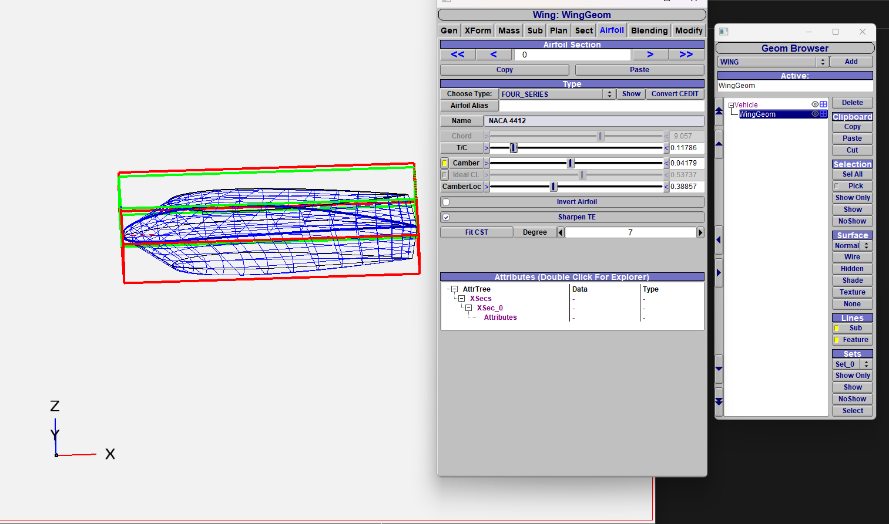
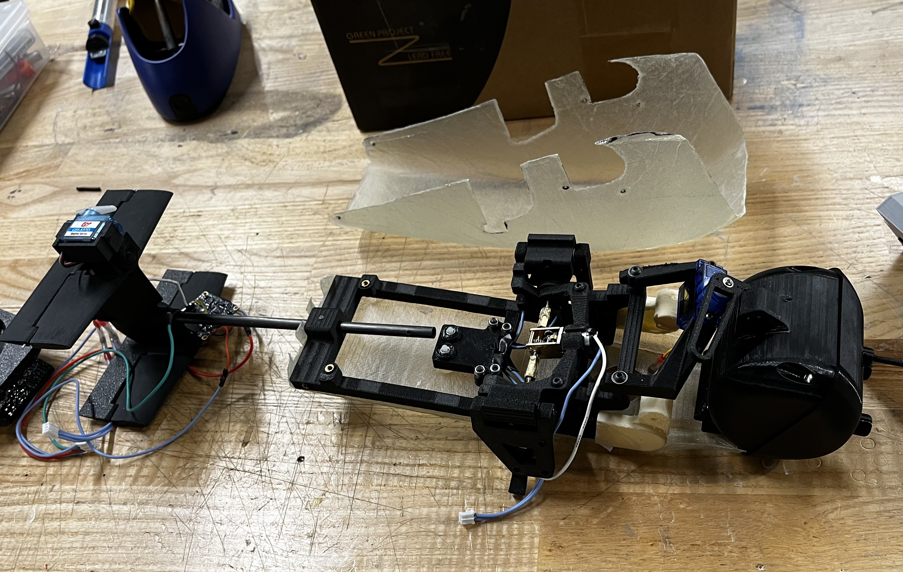

Overview
As part of the RSX Aerial Design Team, I was primarily responsible for the aerodynamic development of an autonomous glider for the AAS CanSat Competition within the mechanical subsystem. I proposed the lifting-body fuselage concept that was ultimately selected for the final vehicle and led much of its aerodynamic development, from early configuration studies through analysis and design refinement. I developed a staged workflow that combined rapid, lower-fidelity analysis with more detailed CFD. I first used OpenVSP and VSPAERO to compare more than 20 candidate airfoil profiles and explore a range of fuselage geometries. The most promising configurations were then selected for higher-fidelity analysis in Autodesk CFD, with key results and flow trends also cross-checked using ANSYS Fluent. The CFD results helped me examine pressure distributions, streamlines, wake development, and boundary-layer behaviour around the lifting-body fuselage. This analysis indicated premature flow separation and considerable spanwise and tip-flow losses, particularly at the glider’s low-Reynolds-number operating conditions. Based on the observed flow behaviour, I incorporated vortex generators and endplates as passive flow-control devices. In simulation, these changes significantly delayed separation and produced an approximately fivefold increase in lift at the design condition. Beyond the glider fuselage, I evaluated rocket nose-cone geometries using Autodesk CFD and OpenRocket, supported CFD-based verification of control mechanisms and aerodynamic interfaces, and assisted with the fibre-composite manufacture of the flight wings. I also played a major role in the refinement of individual parts for electronic and mechanical integration. A significant portion of the tail and release mechanisms were also manufactured and refined by me.
Tools Used
Pictures





Results
- Competition results scored 70% overall
- Main complications arose due to gaps between the nosecone and payload container during launch
Challenges + Solutions
- Integration and manufacturing of mechanical components
- Reconciling CAD models to manufacturing limitations
- Working under time pressure and with a large design team